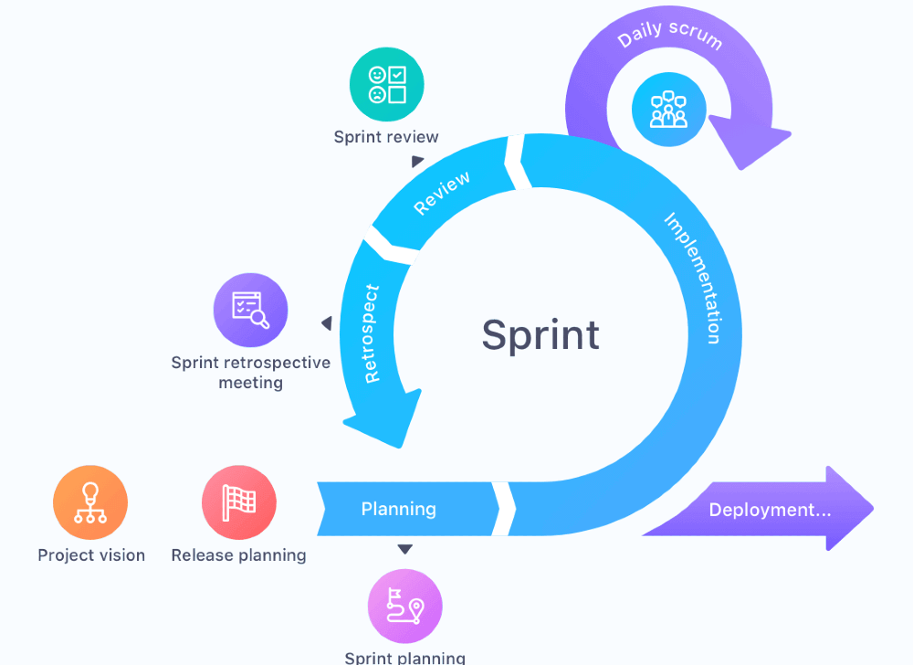

All about Agile
Agile is a simple set of guiding principles that can help teams to work
more effectively and flexibly.
Agile principles
-
Welcome changing requirements, even late in development. Agile processes
harness change for the customer's competitive advantage.
-
Deliver working software frequently, from a couple of weeks to a couple
of months, with a preference to the shorter timescale.
-
Business people and developers must work together daily throughout the
project.
-
Build projects around motivated individuals. Give them the environment
and support they need, and trust them to get the job done.
-
The most efficient and effective method of conveying information to and
within a development team is face-to-face conversation.
- Working software is the primary measure of progress.
-
Agile processes promote sustainable development. The sponsors,
developers, and users should be able to maintain a constant pace
indefinitely.
-
Continuous attention to technical excellence and good design enhances
agility.
-
Simplicity--the art of maximizing the amount of work not done--is
essential.
-
The best architectures, requirements, and designs emerge from
self-organizing teams.
-
At regular intervals, the team reflects on how to become more effective,
then tunes and adjusts its behavior accordingly.
Scrum
Scrum is a framework that suggests some basic ideas to help teams implement the agile principles.
